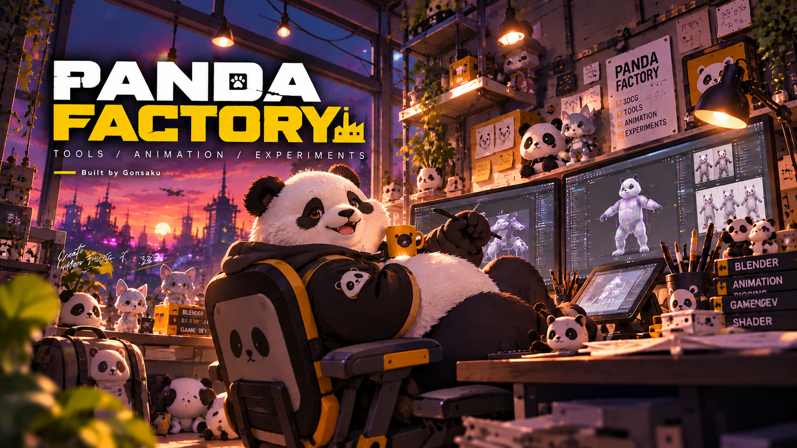

PF / 01RELEASED
Panda Tool
BLENDER UTILITY EXTENSION
アニメーションとリギングのための、実用的なBlenderユーティリティ。制作中の小さな手間を減らすツール集。
Panda Tool DETAILS
v0.6.0

制作から生まれた、小さな道具たち。
Blenderのツールと、キャラクターアニメーションのためのワークフロー。
BLENDER UTILITY EXTENSION
アニメーションとリギングのための、実用的なBlenderユーティリティ。制作中の小さな手間を減らすツール集。
CHARACTER RIGGING / ANIMATION
MixamoのキャラクターをBlenderで扱うためのリギング・アニメーションワークフロー。
LIPSYNC / BLENDER INTEGRATION
音声解析からBlenderへ。リップシンクのデータを、キャラクターの口の動きにつなぐワークフロー。
ANIMATION UTILITY
アニメーション制作のためのユーティリティ。機能紹介と配布情報は準備中です。
ポーズ、動き、表情。キャラクターの魅力を引き出す3DCGアニメーションと、その動きを支えるリグ。
制作の中で感じた「こうできたら」を、小さなツールへ。日々の作業に寄り添うBlenderツールの開発。
トゥーン表現、シェーダー、リアルタイムの見え方。手を動かしながら、新しい表現を探る実験。
キャラクターの動きと、表情のあるルック。
3DCGアニメーションとリアルタイム表現の制作領域。
作品サンプルは順次掲載予定です。
EXPLORE WORKS気になったことを、試してみる。
シェーダー、リグ、制作の仕組みを探る実験室。
公開リポジトリと、これから掘り下げたいテーマ。
VISIT THE LAB3DCG Animator / Tool Developer
キャラクターを動かすこと。
つくる時間を、少し心地よくすること。
そんな制作と実験を、この工房から。